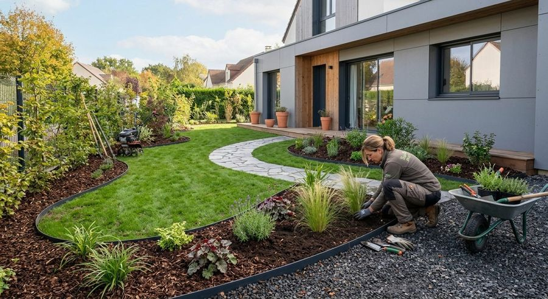

Création et aménagement paysager
Étude personnalisée de votre projet, choix des matériaux et des essences, puis réalisation. Un devis qui allie vos envies et votre budget.
- Haies
- Massifs
- Rocailles
- Gazons
- Arrosage enterré
- Bassins
- Escaliers
- Clôtures